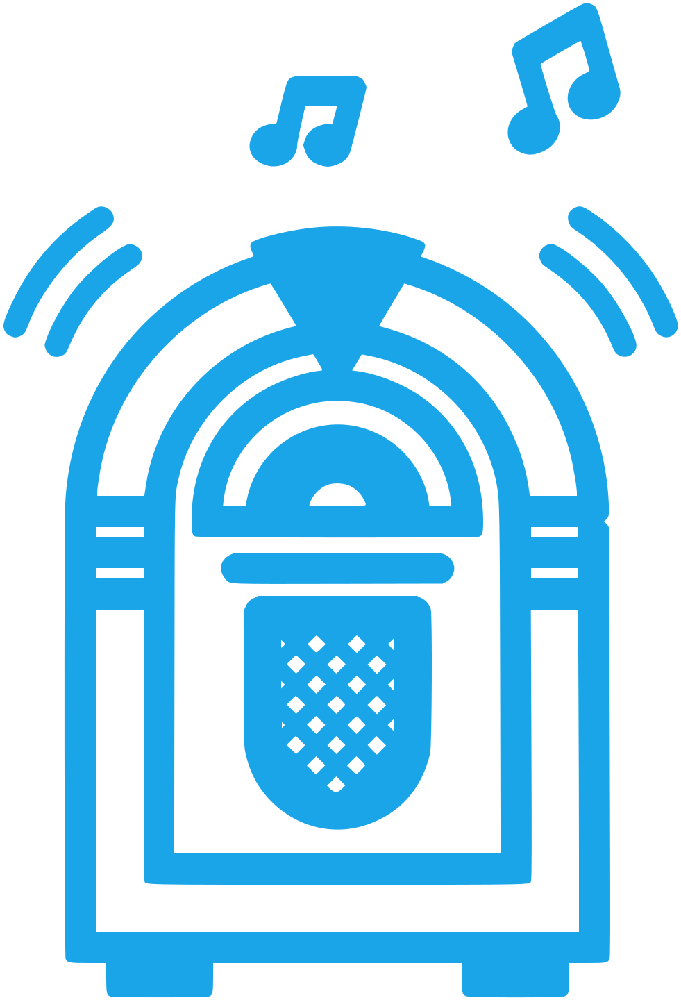

WiiJukeboxStarting WiiJukebox
Getting your music server ready.
Welcome to WiiJukebox
This computer will play your music to your Wii. Pick what you would like, and you'll be set up in just a moment.
Setting up
One moment.
Connect your Wii
- Put the Wii on the same Wi-Fi or network as this computer.
- Open WiiJukebox on your Wii. It looks for this computer by itself.
- If it does not find it, press HOME on the Wii, choose Server address, and type this address:
The Wii cannot find this computer
FFmpeg is needed
Server name and port
Saving restarts the music server, so playback pauses for a moment.
The server stopped
WiiJukebox could not keep its server running. The last lines it printed:
Port is in use
Another program on this computer is already using the port WiiJukebox listens on. Close that program, or let WiiJukebox use a different port. The Wii finds the new port by itself.